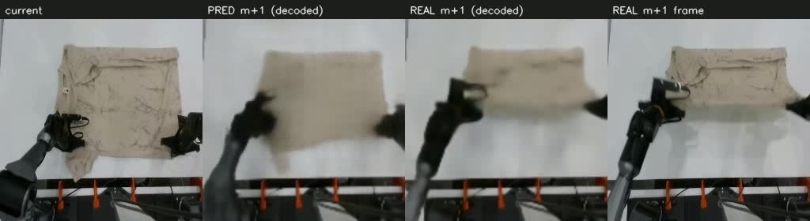
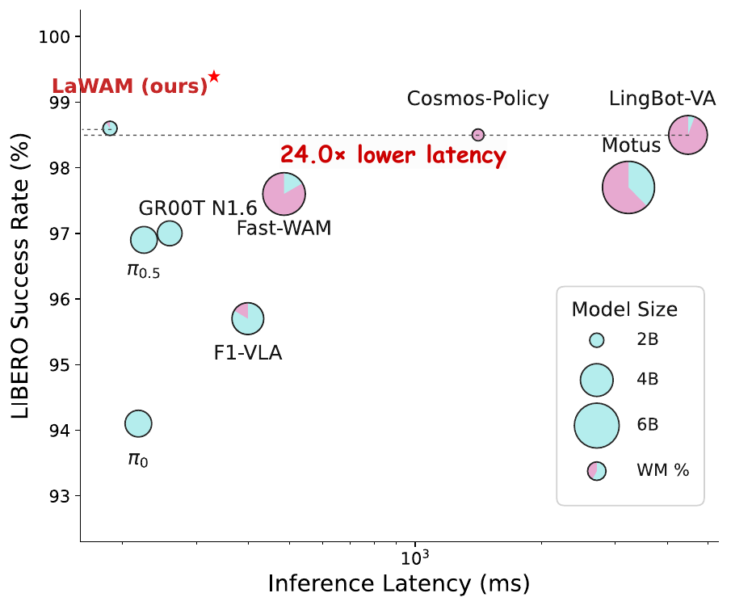

Baseline: LaWM(Latent World Model)
对照基线。LaWM 用冻结 DINOv3 编码 + 逆向动力学 latent action + AdaLN-DiT 解码,预测固定 ~1.6s 后的未来观测特征,再蒸馏给 VLA(Alternate-DiT action expert)。下面是其官方两阶段流水线图,以及我们认为的两点不合理性。

1.1编码器与 VLA 脱离
LaWM 的世界模型用独立的 DINOv3 视觉塔,和下游 VLA 策略不共享表征、不复用 KV。世界模型学到的隐空间不是策略消费的空间,融合时存在表征隔阂 —— latent subgoal 要跨空间蒸馏才能被 action expert 用上,多一层损耗。
1.2只做纯未来预测,正向作用弱
LaWM 用固定 ~1.6s 后的帧当预测目标,没有"任务进展价值"的约束。而 1.6s 后的那一帧可能包含与进展无关甚至误导的信息(相机抖动、干扰物、回退动作)—— 用它做监督,世界模型可能学到错误引导,子目标未必"朝任务完成方向前进"。
1.1编码器独立于 VLA → 世界模型隐空间 ≠ 策略消费空间,融合有隔阂。
1.2只学"1.6s 后长什么样",不保证"朝任务进展前进" → 目标帧的噪声/回退会变成错误引导。
LMWM 网络架构 · 两阶段
针对上面两点,LMWM 分两阶段:2.1 离线构建 milestone 数据集(CRAVE) 给出"价值前向"的监督目标;2.2 在 π0.5 SigLIP 同塔上训练预测器+生成器 消除编码器隔阂。
2.1数据集构建 — CRAVE milestone 数据集(离线 label 工厂)
解决 1.2:目标不是"1.6s 后的帧",而是 CRAVE 跨 episode 复现 + Viterbi 单调分配出的 milestone+1 —— 保证时间前向、跨集一致、进展价值单调↑。这套 DINOv3-H + CRAVE 只在离线产监督目标,不上线。
2.2模型训练 & 部署 — 预测器 + 生成器(π0.5 SigLIP 同塔)
解决 1.1:在线编码换成 π0.5 自己的 SigLIP(与策略同塔、复用 KV,零隔阂)。预测器 Predictor + MDN(K=4) 蒸馏下一 milestone 的簇中心连续码(proto teacher,零参数·开放词表);生成器 Generator(AdaLN) 以当前 grid 为画布渲染子目标。部署含 prev_ẑ 反馈(自身上步输出条件化)+ 密度弃权(不确定时不硬塞)。
训练与部署是两张不同的图:训练时有一道「矿界」—— 线下 CRAVE 挖矿的 label 工厂,只吐监督目标、不上线;部署时矿界整体消失,只剩两个网络在 π0.5 SigLIP 同塔上自包含前向。
| 模块 | 回答什么 | 训练形态 | 部署形态 |
|---|---|---|---|
| 预测器 Predictor | 下一个价值 milestone 是哪个? | proto teacher:下一 milestone 的 SigLIP 簇中心固定投影 → 连续码 z(128);MDN(K=4) NLL 蒸馏 · 开放词表(无 CE anchor) | MDN(K=4) 条件于 g_t + prev_ẑ 反馈(上步自身输出)· 密度弃权(低密度→交还语言通道,不硬塞错提示) |
| 生成器 Generator | 它在当前场景长什么样? | AdaLN:当前 grid 当画布,码 → per-block shift/scale/gate(zero-init gate),只学"变化" · 外观由当前观测带入,训练/部署同一形态 | |
架构定档(2026-07-08 P1/P2 数据收敛):teacher=proto(簇中心码,与 inv 打平但去掉 InverseEnc+CE 锚,更简/开放词表);预测器加 prev_ẑ 条件化(自身上步输出反馈,code-top1 +0.029,xvla 身份 +0.012);不确定性通过MDN 自身密度弃权(替代熵门——pi 塌成 one-hot 而密度能分对错 AUC 0.63);DINO 沙箱否决(SigLIP-native 解码 L1 0.027 ≈ DINO-true 0.025,穿过 DINO 反而赔钱)。完整设计赌注逐项裁决见 lmwm/docs/LMWM2_FINAL_ARCHITECTURE.md。
2.3预测渲染效果
最终模型(center_w=0.1)预测 milestone+1。四栏 = 当前 │ 预测 m+1 解码 │ 真实 m+1 编→解码 │ 真实 m+1 帧(中间两栏过同一解码器 → 差异纯是预测质量)。
对比分析 · LMWM vs LaWM
从与 VLA 的嵌入程度(3.1)和预测指标/视野(3.2)两个角度对照。
3.1与 VLA 的嵌入程度 & 参数
LaWM 用独立 DINOv3 双塔、与策略脱离,latent 需跨空间蒸馏;LMWM 直接长在 π0.5 SigLIP 同塔上、复用 KV,子目标即策略消费空间 —— 嵌入更深、隔阂更小,且参数轻 ~10×。
| 维度 | LaWM(baseline) | LMWM(ours) |
|---|---|---|
| 在线编码器 | 独立 DINOv3 ViT-B/16(768) | π0.5 SigLIP-So400m(1152)· 与策略同塔 |
| 与 VLA 关系 | 脱离 · latent 跨空间蒸馏 | 同塔复用 KV · 子目标即策略空间 |
| teacher / 预测 | 24 层 Perceiver-Transformer 逆向动力学 | proto teacher(簇中心码,0 参数)+ MDN(K=4)预测器 |
| 码 / 调制 | VAE code 32 · 12 层 AdaLN-DiT | 连续码 128(码即簇中心=身份,开放词表)· 生成器 AdaLN(4 块 CNN) |
| 码调制方式 | AdaLN-DiT(Transformer) | AdaLN(CNN · 收敛到同款) |
| 部署预测码 | LAM 内无 predm · 甩给策略 | 内置 MDN predm · 世界模型自包含 |
| 世界模型参数 | ~230M Transformer | ~34M CNN(轻 ~10×) |
LaWM 结构参照其官方两阶段图(§01,rlinf.github.io/LaWAM)。两者都收敛到 AdaLN 码调制 —— 我们消融里 concat 变体的 lag/平滑掉,自发换成 AdaLN。
3.2预测指标 / 视野对比
同一批 kai0 数据、同一 reach 协议(预测帧匹配到的真帧比当前晚几秒)实测。⚠️ grid-cos 编码器空间不同不硬比;reach(秒)严格同口径(给官方 LaWM ckpt 补 deploy-predm 后在我们数据上测)。
| 指标(headline) | LaWM | LMWM(cw=0.1) | 谁好 / 口径 |
|---|---|---|---|
| reach / model lag(秒) | 1.48 | 1.67 | LMWM 好 · 严格同口径,绝对更远 |
| undershoot ratio | 0.89 | 0.63 | LaWM 高:近未来易打满(非更强) |
| 负滞后率(<0) | 10.7% | 6.5% | LMWM 好 · 更少"预测倒退" |
| deploy grid-cos | — | 0.728 | 只看当前帧实战值(硬指标①) |
| 身份 top-3 / 价值单调 | N/A | 0.511 / ✓ | 硬指标② LaWM 无此约束 |
| 下游 SR(extrinsic) | LIBERO 98.6% | 待测(§04) | LaWM 好 · 唯一短板 |
完整 13 项对比(oracle/lift/horizon/前向率/平滑/跨集 + N/A 脚注)见报告 lmwm/docs/FINAL_REPORT.md §3。


一句话读表:LMWM 更好的:reach 1.67>1.48s、负滞后 6.5%<10.7%、参数轻 ~10×、与 VLA 嵌入更深、进展价值单调(硬指标②)、跨集可定量。LMWM 不足的:undershoot ratio 0.63<0.89(目标远所致,非更弱)、grid-cos 空间不同不硬比、下游 SR 待测(LaWM 已有 98.6%)。
未来计划:LMWM × VLA 融合 → LMVLA / LMWAM
当前 intrinsic 预测指标已达/超 LaWM 同级,两条硬指标(①保真 ②价值前向)达标。唯一短板是 extrinsic 的下游 SR。下一步把生成器子目标 Ĝ + 预测器码 ẑ 注入 kai0 π0.5 action expert,做效果与指标对比。
对照 LaWM 两阶段图(§01):我们把 Stage-1 世界模型(预测器+生成器)与 Stage-2 VLA 融合(KI + RoPE 偏移 + mask 注入 π0.5 action expert)画到同一流程。三点关键区别:① 编码器是与策略共享的 π0.5 SigLIP(LaWM 用独立 DINO,融合有隔阂);② 预测器内置 MDN、世界模型自包含(LaWM 把预测码甩给策略);③ 目标是 CRAVE 价值单调 milestone+1(LaWM 固定 1.6s 未来)。
| 阶段 | 动作 | 裁决指标 |
|---|---|---|
| Phase 1 · 融合接线 | 子目标 Ĝ + 码 ẑ 注入 action expert(KI + RoPE 偏移 + mask 重设计),本地 2 卡短跑 | offline action-MAE(base vs +LMWM vs control) |
| Phase 2 · 簇微调 | 集群提交训练(submit-training-job) | action-MAE 收敛 |
| Phase 3 · 真机 | kai0 叠衣真机 rollout | SR ↔ 对齐 LaWM 98.6% |
目标:用 LMVLA/LMWAM 与 LaWM 做同台效果 + 指标对比 —— 既比 intrinsic 预测(已达/超),也补齐 extrinsic 的 action-MAE / SR,验证"价值层宏观引导"对下游策略的真实增益。